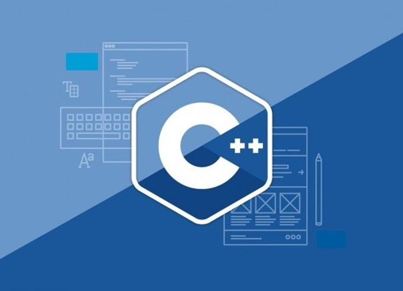
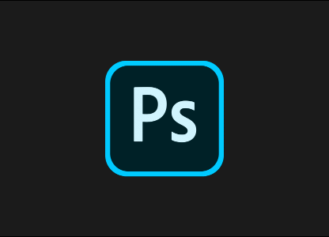

I’m a software engineer specializing in building (and occasionally designing) exceptional user experiences. Currently,
I have experience building SPA applications using React.js and Redux.js, and I'm also experienced in building and integrating APIs for content management systems like WordPress.
My 5 year journey in the tech field has allowed me to gain the analytical skills and important ability to solve complex problems.
My hobbies
Unprofessionally, I like learning and dabbling in IoT. I would love to master the ability to make smart home appliances with beautiful and exceptional user experiences. But besides computers, I enjoy mother nature whenever I can
and love learning about ancient civilization.
Implemented social media SEO tactics aligned with our company’s keyword and SEO strategies.
Communicated with multi-disciplinary teams of engineers, designers, producers, and clients on a daily basis.
Worked closely with designers and management team to develop, document, and manage Green Gorilla's main e-commerce website using PHP, Sass, and JavaScript (React).
Built dynamic web-based, mobile responsive community survey forms and web pages using HTML5, CSS, and JavaScript
Manually tested sites in various browsers and mobile devices to ensure cross-browser compatibility and responsiveness.
Proposed and implemented scalable solutions to issues identified with cloud services and applications responsible for communicating with the local city's constituency.
Engineered and maintained major features of Fajuva's customer-facing web app using WordPress as the content mangement system. Additionally used tools like ES6, SaSS, HTML5, and the Gutenburg Editor
to create custom features.
Interfaced with the client on a weekly basis, providing technological expertise.
Helped solidify a brand direction for Fajuva that spans both packaging and web.
Worked with Excel and Tableau to obtain statistical data from ARIS and manipulated data to present tables and charts to management.
Queried the Agricultural Research Information Services (ARIS) database using Oracle SQL for any data requested by management.
Coordinated the submission of Research Position Evaluation (RPE) cases for mandatory reviews. Reviewed the cases for format, completeness, and conformance to existing RPE policies and procedures
prior to submitting them to the Area Director for final revision.
Reviewed, formatted, and edited annual reports to document the progress and accomplishments of scientists, which were conducted under extreme time restrictions.
My Portfolio


Pokedex
Project Summary
This project is based on one of my favorite childhood animated shows, Pokémon. The project demonstrates my ability to use multiple front-end technologies to build a simple one-page web application.
Technologies used to build the Pokedex project are:
A results oriented Software Developer with extensive leadership experience in a highly competitive IT and E-commerce industry. Proven track record of leading
and managing multi-million dollar international programs across northern Europe, Middle-East, North America and South America.
Specialized in launching new services and products from concept to roll-out and building organizations from ground up. Expertise in improving team performance while securing customer loyalty and forging valuable
relationships with internal and external partners.
For more information regarding my work experience, download my resume.
Website & Webpages Launched
Feel free to view some of the projects I have worked on: